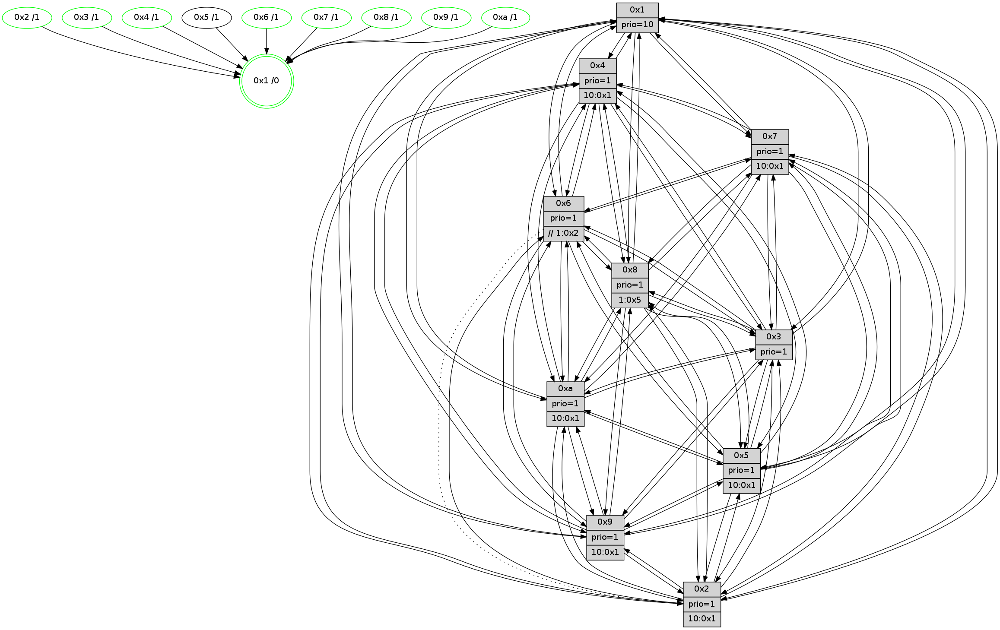

>> << IDX [start] -100 -25 -5 +0 +5 +25 [1630.28343105]
 Previous packets
----------------------------------------------------------------------
1625.554647 beacon01(faad) #0 coord=01,02,03,04,05,06,07,0a,09,08 cycle=688.0ms assoc
-- color-indic=1 64 b9 a3
1625.564629 beacon02(faad) #0 coord=01,02,03,04,05,06,07,0a,09,08 cycle=688.0ms assoc 64 2a 92
1625.574630 beacon03(faad) #0 coord=01,02,03,04,05,06,07,0a,09,08 cycle=688.0ms assoc 64 50 df
1625.584630 beacon04(faad) #0 coord=01,02,03,04,05,06,07,0a,09,08 cycle=688.0ms assoc 64 27 35
1625.594629 beacon05(faad) #0 coord=01,02,03,04,05,06,07,0a,09,08 cycle=688.0ms assoc 64 5d 78
1625.604632 beacon06(faad) #0 coord=01,02,03,04,05,06,07,0a,09,08 cycle=688.0ms assoc 64 d3 af
1625.614634 beacon07(faad) #0 coord=01,02,03,04,05,06,07,0a,09,08 cycle=688.0ms assoc 64 a9 e2
1625.624635 beacon0a(faad) #0 coord=01,02,03,04,05,06,07,0a,09,08 cycle=688.0ms assoc 64 d8 e9
1625.644636 beacon08(faad) #0 coord=01,02,03,04,05,06,07,0a,09,08 cycle=688.0ms assoc 64 2c 73
1625.656566 [STC(4)->1 #0.297 new-neigh,tree-change,inconsistent-stability,stable,to-color d=1]
1625.657849 [STC(9)->1 #0.297 new-neigh,tree-change,inconsistent-stability,stable,to-color d=1]
1625.660377 [Hello(3): seq=1036 sym=1,7,6,2,4,8,9,10,5 sysInfo=hasWarning stat=1:13,3,1,0/7:15,7,12,1/6:2,3,1,0/2:8,9,3,0/4:10,3,8,1/8:9,2,0,10/9:6,7,2,4/10:15,15,8,9/5:5,4,14,4]
1625.662927 [STC(7)->1 #0.297 new-neigh,tree-change,inconsistent-stability,stable,to-color d=1]
1625.665762 [Hello(2): seq=1032 sym=4,5,7,3,9,8,10,1 sysInfo=hasWarning stat=4:15,2,1,1/5:2,3,4,5/7:6,11,12,5/3:4,14,8,1/9:9,14,15,13/8:12,0,14,1/10:8,1,15,0/1:15,13,7,0]
1625.668525 [Hello(6): seq=1036 sym=3,2,5,4,7,9,8,10,1 sysInfo=hasWarning stat=3:9,15,3,1/2:5,10,8,3/5:0,3,8,8/4:7,11,0,12/7:2,12,7,2/9:13,14,6,14/8:4,1,11,12/10:5,15,0,2/1:9,0,12,1]
1625.671442 [Hello(5): seq=1036 sym=7,6,4,2,1,9,8,10,3 sysInfo=hasWarning stat=7:3,5,8,3/6:1,9,8,4/4:0,7,10,1/2:14,0,7,2/1:2,7,4,0/9:12,3,4,15/8:13,1,15,10/10:3,2,8,13/3:2,15,9,0]
1625.674337 [STC(3)->1 #0.297 new-neigh,tree-change,inconsistent-stability,stable,to-color d=1]
1625.676288 [STC(6)->1 #0.297 new-neigh,tree-change,inconsistent-stability,stable,to-color d=1]
1625.677927 [Color(6) seq=668 @0:0 prio=1 >>1.@2,1.@3,1.@4]
1625.679841 [STC(5)->1 #0.297 new-neigh,tree-change,inconsistent-stability,to-color d=1]
1625.681987 [STC(2)->1 #0.297 new-neigh,tree-change,inconsistent-stability,stable,to-color d=1]
1625.683950 [Color(2) seq=596 @0:0 prio=1 >10.@1,1.@3,1.@4,1.@5]
1625.692413 [Hello(1): seq=945 sym=4,2,9,5,10,3,8,6,7 sym= sysInfo=coloring-mode-on,ColoringModeRequestCalled stat=]
1625.697192 [Color(3) seq=665 @0:0 prio=1]
----------------------------------------------------------------------
1626.342777 beacon01(faad) #0 coord=01,02,03,04,05,06,07,0a,09,08 cycle=688.0ms assoc
-- color-indic=1 64 05 a6
1626.352760 beacon02(faad) #0 coord=01,02,03,04,05,06,07,0a,09,08 cycle=688.0ms assoc 64 96 97
1626.362759 beacon03(faad) #0 coord=01,02,03,04,05,06,07,0a,09,08 cycle=688.0ms assoc 64 ec da
1626.372760 beacon04(faad) #0 coord=01,02,03,04,05,06,07,0a,09,08 cycle=688.0ms assoc 64 9b 30
1626.382760 beacon05(faad) #0 coord=01,02,03,04,05,06,07,0a,09,08 cycle=688.0ms assoc 64 e1 7d
1626.392759 beacon06(faad) #0 coord=01,02,03,04,05,06,07,0a,09,08 cycle=688.0ms assoc 64 6f aa
1626.402760 beacon07(faad) #0 coord=01,02,03,04,05,06,07,0a,09,08 cycle=688.0ms assoc 64 15 e7
1626.412765 beacon0a(faad) #0 coord=01,02,03,04,05,06,07,0a,09,08 cycle=688.0ms assoc 64 64 ec
1626.432765 beacon08(faad) #0 coord=01,02,03,04,05,06,07,0a,09,08 cycle=688.0ms assoc 64 90 76
1626.444955 [Hello(8): seq=980 sym=5,2,3,7,9,6,4,10,1 sysInfo=hasWarning stat=5:4,7,13,4/2:8,8,6,0/3:7,2,11,6/7:11,5,11,2/9:7,0,0,9/6:2,15,9,5/4:14,4,4,3/10:0,15,5,8/1:12,11,15,0]
1626.447687 [Hello(7): seq=1036 sym=2,3,5,6,8,4,10,1 sysInfo=hasWarning stat=2:10,15,6,8/3:13,6,11,8/5:13,15,3,7/6:8,8,5,2/8:3,13,11,3/4:5,12,7,2/10:10,3,1,1/1:11,14,9,0]
1626.450714 [Color(7) seq=543 @0:0 prio=1 >10.@1,1.@5,1.@6,1.@8]
1626.452616 [Hello(4): seq=1036 sym=5,8,6,2,3,9,7,10,1 sysInfo=hasWarning stat=5:13,4,5,6/8:6,10,10,1/6:3,2,1,7/2:5,6,9,5/3:8,8,0,2/9:1,10,5,6/7:10,5,10,3/10:0,4,12,1/1:13,6,10,1]
1626.456708 [Color(4) seq=553 @0:0 prio=1 >10.@1,1.@2,1.@3,1.@5]
1626.458818 [Hello(10): seq=969 sym=6,2,3,8,7,5,9,4,1 sysInfo=hasWarning stat=6:15,2,6,10/2:6,6,10,4/3:14,10,1,1/8:9,7,11,8/7:9,14,5,2/5:11,1,12,5/9:7,13,4,0/4:1,2,1,0/1:10,5,10,1]
1626.461632 [Color(10) seq=613 @0:0 prio=1 >10.@1,1.@5,1.@6,1.@7]
1626.464401 [Color(1) seq=716 @0:0 prio=10]
1626.469016 [Hello(9): seq=980 sym=2,5,3,4,7,6,8,10,1 sysInfo=hasWarning stat=2:5,2,10,15/5:8,14,14,2/3:4,5,7,8/4:3,4,1,0/7:12,0,5,3/6:2,0,6,6/8:10,13,14,11/10:5,10,2,1/1:4,11,12,1]
1626.472139 [Color(9) seq=562 @0:0 prio=1 >10.@1,1.@5,1.@6,1.@7]
----------------------------------------------------------------------
1627.130906 beacon01(faad) #0 coord=01,02,03,04,05,06,07,0a,09,08 cycle=688.0ms assoc
-- color-indic=1 64 c1 a8
1627.140888 beacon02(faad) #0 coord=01,02,03,04,05,06,07,0a,09,08 cycle=688.0ms assoc 64 52 99
1627.150888 beacon03(faad) #0 coord=01,02,03,04,05,06,07,0a,09,08 cycle=688.0ms assoc 64 28 d4
1627.160888 beacon04(faad) #0 coord=01,02,03,04,05,06,07,0a,09,08 cycle=688.0ms assoc 64 5f 3e
1627.170890 beacon05(faad) #0 coord=01,02,03,04,05,06,07,0a,09,08 cycle=688.0ms assoc 64 25 73
1627.180888 beacon06(faad) #0 coord=01,02,03,04,05,06,07,0a,09,08 cycle=688.0ms assoc 64 ab a4
1627.190890 beacon07(faad) #0 coord=01,02,03,04,05,06,07,0a,09,08 cycle=688.0ms assoc 64 d1 e9
1627.200894 beacon0a(faad) #0 coord=01,02,03,04,05,06,07,0a,09,08 cycle=688.0ms assoc 64 a0 e2
1627.220895 beacon08(faad) #0 coord=01,02,03,04,05,06,07,0a,09,08 cycle=688.0ms assoc 64 54 78
1627.233334 [Hello(5): seq=1037 sym=7,6,4,2,1,9,8,10,3 sysInfo=hasWarning stat=7:4,6,8,3/6:1,9,8,4/4:1,8,10,1/2:14,1,8,2/1:3,8,4,0/9:13,4,4,15/8:14,1,15,10/10:4,3,8,13/3:2,0,9,0]
1627.236692 [Hello(3): seq=1037 sym=1,7,6,2,4,8,9,10,5 sysInfo=hasWarning stat=1:13,4,1,0/7:0,8,12,1/6:2,3,1,0/2:8,9,3,0/4:11,4,9,1/8:10,2,0,10/9:7,8,3,4/10:0,0,8,9/5:5,4,14,4]
1627.241255 [Hello(2): seq=1033 sym=4,5,7,3,9,8,10,1 sym= sysInfo=hasWarning stat=]
1627.244590 [Color(2) seq=597 @0:0 prio=1 >10.@1,1.@3,1.@4,1.@5]
1627.246473 [Hello(6): seq=1037 sym=3,2,5,4,7,9,8,10,1 sysInfo=hasWarning stat=3:9,0,3,1/2:5,11,9,3/5:0,3,9,8/4:8,12,1,12/7:3,13,7,2/9:14,15,7,14/8:5,1,11,12/10:6,0,0,2/1:10,1,12,1]
1627.250725 [Color(8) seq=624 @0:0 prio=1 >1.@5,1.@6,1.@7,1.@9]
1627.253234 [Color(3) seq=666 @0:0 prio=1]
1627.258292 [Hello(1): seq=946 sym=4,2,9,5,10,3,8,6,7 sysInfo=coloring-mode-on,ColoringModeRequestCalled stat=4:5,10,1,5/2:0,11,0,9/9:2,15,15,6/5:8,3,5,13/10:9,7,7,11/3:14,7,9,15/8:1,3,14,9/6:9,1,2,8/7:9,10,6,5]
1627.266791 [Color(6) seq=669 @0:0 prio=1 >>1.@2,1.@3,1.@4]
----------------------------------------------------------------------
1627.919038 beacon01(faad) #0 coord=01,02,03,04,05,06,07,0a,09,08 cycle=688.0ms assoc
-- color-indic=1 64 7d ad
1627.929021 beacon02(faad) #0 coord=01,02,03,04,05,06,07,0a,09,08 cycle=688.0ms assoc 64 ee 9c
1627.939020 beacon03(faad) #0 coord=01,02,03,04,05,06,07,0a,09,08 cycle=688.0ms assoc 64 94 d1
1627.949022 beacon04(faad) #0 coord=01,02,03,04,05,06,07,0a,09,08 cycle=688.0ms assoc 64 e3 3b
1627.959021 beacon05(faad) #0 coord=01,02,03,04,05,06,07,0a,09,08 cycle=688.0ms assoc 64 99 76
1627.969022 beacon06(faad) #0 coord=01,02,03,04,05,06,07,0a,09,08 cycle=688.0ms assoc 64 17 a1
1627.979022 beacon07(faad) #0 coord=01,02,03,04,05,06,07,0a,09,08 cycle=688.0ms assoc 64 6d ec
1627.989026 beacon0a(faad) #0 coord=01,02,03,04,05,06,07,0a,09,08 cycle=688.0ms assoc 64 1c e7
1628.009027 beacon08(faad) #0 coord=01,02,03,04,05,06,07,0a,09,08 cycle=688.0ms assoc 64 e8 7d
1628.021199 [Hello(8): seq=981 sym=5,2,3,7,9,6,4,10,1 sysInfo=hasWarning stat=5:5,7,13,4/2:8,8,6,0/3:7,3,11,6/7:12,6,11,2/9:8,1,0,9/6:2,0,9,5/4:15,5,4,3/10:1,0,5,8/1:13,12,15,0]
1628.025511 [Hello(4): seq=1037 sym=5,8,6,2,3,9,7,10,1 sysInfo=hasWarning stat=5:14,4,5,6/8:7,11,10,1/6:4,3,1,7/2:6,7,9,5/3:9,9,0,2/9:2,11,5,6/7:10,5,10,3/10:1,5,12,1/1:14,7,10,1]
1628.029167 [Hello(9): seq=981 sym=2,5,3,4,7,6,8,10,1 sysInfo=hasWarning stat=2:6,3,10,15/5:9,14,14,2/3:5,6,7,8/4:3,4,1,0/7:12,0,5,3/6:3,1,6,6/8:11,14,14,11/10:5,10,2,1/1:5,11,12,1]
1628.031862 [Hello(10): seq=970 sym=6,2,3,8,7,5,9,4,1 sysInfo=hasWarning stat=6:0,3,6,10/2:7,7,10,4/3:15,11,1,1/8:10,8,11,8/7:9,14,5,2/5:12,1,12,5/9:8,14,4,0/4:1,2,1,0/1:11,6,10,1]
1628.034527 [Color(4) seq=554 @0:0 prio=1 >10.@1,1.@2,1.@3,1.@5]
1628.036807 [Hello(7): seq=1037 sym=2,3,5,6,8,4,9,10,1 sysInfo=hasWarning stat=2:11,0,6,8/3:14,7,11,8/5:14,15,3,7/6:9,9,5,2/8:4,14,11,3/4:6,13,7,2/9:0,1,0,0/10:11,4,1,1/1:12,15,9,0]
1628.039306 [Color(10) seq=614 @0:0 prio=1 >10.@1,1.@5,1.@6,1.@7]
1628.043910 [Color(7) seq=544 @0:0 prio=1 >10.@1,1.@5,1.@6,1.@8]
1628.047708 [Color(1) seq=717 @0:0 prio=10]
1628.049485 [Color(9) seq=563 @0:0 prio=1 >10.@1,1.@5,1.@6,1.@7]
----------------------------------------------------------------------
1628.707169 beacon01(faad) #0 coord=01,02,03,04,05,06,07,0a,09,08 cycle=688.0ms assoc
-- color-indic=1 64 49 b5
1628.717152 beacon02(faad) #0 coord=01,02,03,04,05,06,07,0a,09,08 cycle=688.0ms assoc 64 da 84
1628.727152 beacon03(faad) #0 coord=01,02,03,04,05,06,07,0a,09,08 cycle=688.0ms assoc 64 a0 c9
1628.737152 beacon04(faad) #0 coord=01,02,03,04,05,06,07,0a,09,08 cycle=688.0ms assoc 64 d7 23
1628.747152 beacon05(faad) #0 coord=01,02,03,04,05,06,07,0a,09,08 cycle=688.0ms assoc 64 ad 6e
1628.757152 beacon06(faad) #0 coord=01,02,03,04,05,06,07,0a,09,08 cycle=688.0ms assoc 64 23 b9
1628.767152 beacon07(faad) #0 coord=01,02,03,04,05,06,07,0a,09,08 cycle=688.0ms assoc 64 59 f4
1628.777157 beacon0a(faad) #0 coord=01,02,03,04,05,06,07,0a,09,08 cycle=688.0ms assoc 64 28 ff
1628.797157 beacon08(faad) #0 coord=01,02,03,04,05,06,07,0a,09,08 cycle=688.0ms assoc 64 dc 65
1628.809015 [Hello(1): seq=947 sym=4,2,9,5,10,3,8,6,7 sysInfo=coloring-mode-on,ColoringModeRequestCalled stat=4:5,10,1,5/2:0,11,0,9/9:2,0,15,6/5:8,3,5,13/10:9,7,7,11/3:14,7,9,15/8:2,3,14,9/6:9,2,2,8/7:9,10,6,5]
1628.812240 [Hello(3): seq=1038 sym=1,7,6,2,4,8,9,10,5 sysInfo=hasWarning stat=1:14,5,1,0/7:1,9,12,1/6:2,4,1,0/2:8,9,3,0/4:12,5,9,1/8:11,2,0,10/9:8,9,3,4/10:1,1,8,9/5:6,4,14,4]
1628.815068 [Color(3) seq=667 @0:0 prio=1]
1628.816821 [Hello(6): seq=1038 sym=3,5,4,7,9,8,10,1 asym=2 sysInfo=hasWarning stat=3:9,0,3,1/5:1,3,9,8/4:9,13,1,12/7:4,14,7,2/9:15,0,7,14/8:6,1,11,12/10:7,1,0,2/1:10,2,12,1/2:5,11,9,3]
1628.819608 [STC(1) #0.298 new-neigh,tree-change,inconsistent-stability,stable,to-color d=0]
1628.821077 [Hello(5): seq=1038 sym=7,6,4,2,1,9,8,10,3 sysInfo=hasWarning stat=7:5,7,8,3/6:2,10,8,4/4:2,9,10,1/2:15,2,8,2/1:4,9,4,0/9:14,5,4,15/8:15,2,15,10/10:5,4,8,13/3:3,1,9,0]
1628.825116 [Color(8) seq=625 @0:0 prio=1 >1.@5,1.@6,1.@7,1.@9]
1628.830673 [Color(6) seq=670 @0:0 prio=1 >>1.@2,1.@3,1.@4]
1628.841393 [Hello(2): seq=1034 sym=4,5,7,6,3,9,8,10,1 sysInfo=hasWarning stat=4:1,4,2,1/5:3,3,4,5/7:8,13,12,5/6:0,1,0,0/3:4,0,8,1/9:11,0,0,13/8:14,1,14,1/10:10,3,15,0/1:1,15,7,0]
1628.845818 [Color(2) seq=598 @0:0 prio=1 >10.@1,1.@3,1.@4,1.@5]
----------------------------------------------------------------------
1629.495300 beacon01(faad) #0 coord=01,02,03,04,05,06,07,0a,09,08 cycle=688.0ms assoc
-- color-indic=1 64 f5 b0
1629.505281 beacon02(faad) #0 coord=01,02,03,04,05,06,07,0a,09,08 cycle=688.0ms assoc 64 66 81
1629.515282 beacon03(faad) #0 coord=01,02,03,04,05,06,07,0a,09,08 cycle=688.0ms assoc 64 1c cc
1629.525282 beacon04(faad) #0 coord=01,02,03,04,05,06,07,0a,09,08 cycle=688.0ms assoc 64 6b 26
1629.535284 beacon05(faad) #0 coord=01,02,03,04,05,06,07,0a,09,08 cycle=688.0ms assoc 64 11 6b
1629.545285 beacon06(faad) #0 coord=01,02,03,04,05,06,07,0a,09,08 cycle=688.0ms assoc 64 9f bc
1629.555283 beacon07(faad) #0 coord=01,02,03,04,05,06,07,0a,09,08 cycle=688.0ms assoc 64 e5 f1
1629.565288 beacon0a(faad) #0 coord=01,02,03,04,05,06,07,0a,09,08 cycle=688.0ms assoc 64 94 fa
1629.575288 beacon09(faad) #0 coord=01,02,03,04,05,06,07,0a,09,08 cycle=688.0ms assoc 64 1a 2d
1629.585289 beacon08(faad) #0 coord=01,02,03,04,05,06,07,0a,09,08 cycle=688.0ms assoc 64 60 60
1629.596914 [STC(3)->1 #0.298 new-neigh,tree-change,inconsistent-stability,stable,to-color d=1]
1629.600514 [Color(1) seq=718 @0:0 prio=10]
1629.602088 [Hello(8): seq=982 sym=5,2,3,7,9,6,4,10,1 sysInfo=hasWarning stat=5:5,7,13,4/2:9,9,6,0/3:7,3,11,6/7:13,7,11,2/9:9,2,0,9/6:2,1,9,5/4:0,6,4,3/10:2,1,5,8/1:14,13,15,0]
1629.606683 [Hello(7): seq=1038 sym=2,3,5,6,8,4,9,10,1 sysInfo=hasWarning stat=2:12,1,6,8/3:15,8,11,8/5:15,15,3,7/6:10,10,5,2/8:5,15,11,3/4:6,13,7,2/9:0,2,0,0/10:11,4,1,1/1:13,0,10,0]
1629.609121 [Hello(4): seq=1038 sym=5,8,6,2,3,9,7,10,1 sysInfo=hasWarning stat=5:15,4,5,6/8:8,12,10,1/6:5,4,1,7/2:7,8,9,5/3:10,10,0,2/9:2,12,5,6/7:11,6,10,3/10:1,6,12,1/1:15,8,11,1]
1629.611794 [Hello(10): seq=971 sym=6,2,3,8,7,5,9,4,1 sysInfo=hasWarning stat=6:1,4,6,10/2:8,8,10,4/3:0,12,1,1/8:11,9,11,8/7:9,15,5,2/5:13,1,12,5/9:8,15,4,0/4:1,2,1,0/1:12,7,11,1]
1629.615809 [STC(7)->1 #0.298 new-neigh,tree-change,inconsistent-stability,stable,to-color d=1]
1629.617749 [Color(7) seq=545 @0:0 prio=1 >10.@1,1.@5,1.@6,1.@8]
1629.619763 [Hello(9): seq=982 sym=2,5,3,4,7,6,8,10,1 sysInfo=hasWarning stat=2:7,4,10,15/5:10,14,14,2/3:6,7,7,8/4:3,4,1,0/7:12,0,5,3/6:4,2,6,6/8:12,15,14,11/10:5,10,2,1/1:6,11,13,1]
1629.623719 [STC(4)->1 #0.298 new-neigh,tree-change,inconsistent-stability,stable,to-color d=1]
1629.626944 [Color(4) seq=555 @0:0 prio=1 >10.@1,1.@2,1.@3,1.@5]
1629.631341 [STC(10)->1 #0.298 new-neigh,tree-change,inconsistent-stability,stable,to-color d=1]
1629.633938 [Color(10) seq=615 @0:0 prio=1 >10.@1,1.@5,1.@6,1.@7]
1629.637906 [STC(9)->1 #0.298 new-neigh,tree-change,inconsistent-stability,stable,to-color d=1]
1629.641144 [TreeStatus(9)-.->1 #0.298 new-neigh,tree-change,inconsistent-stability,stable child=1]
1629.642647 [Color(9) seq=564 @0:0 prio=1 >10.@1,1.@5,1.@6,1.@7]